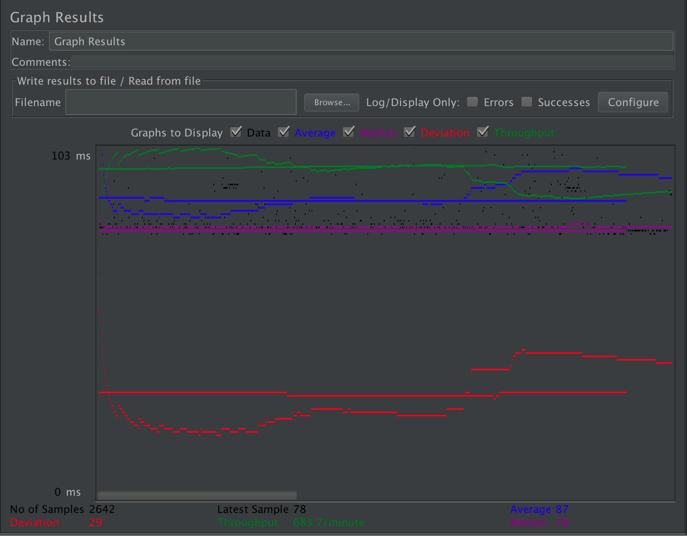
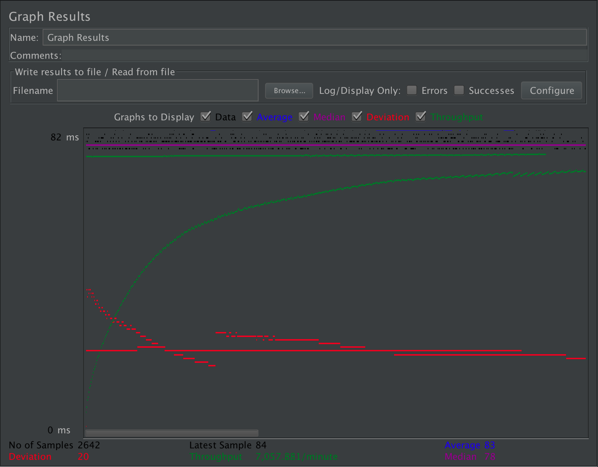
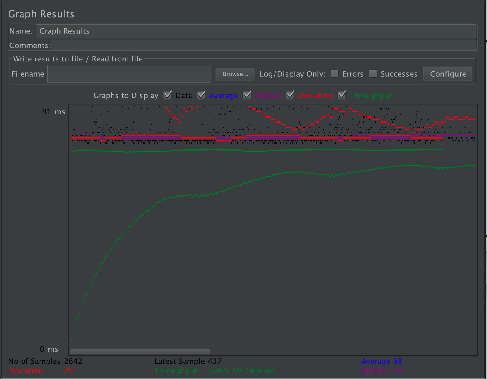
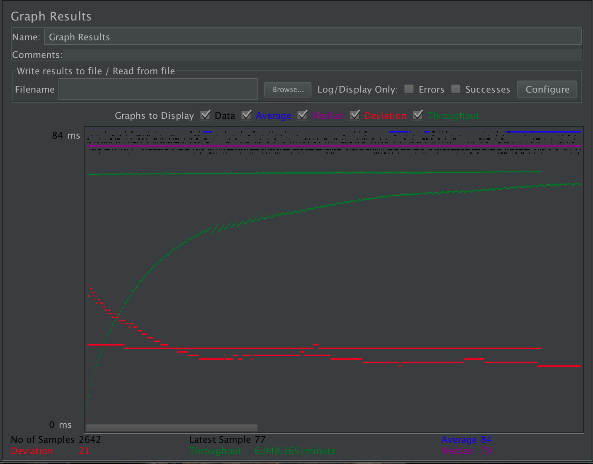
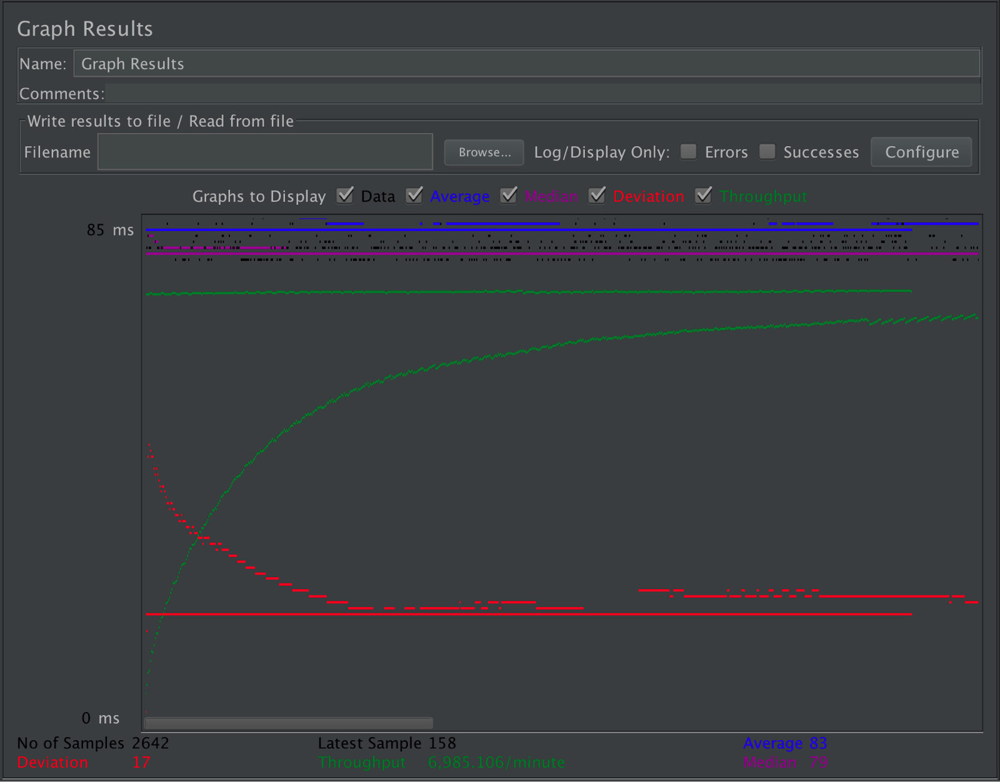
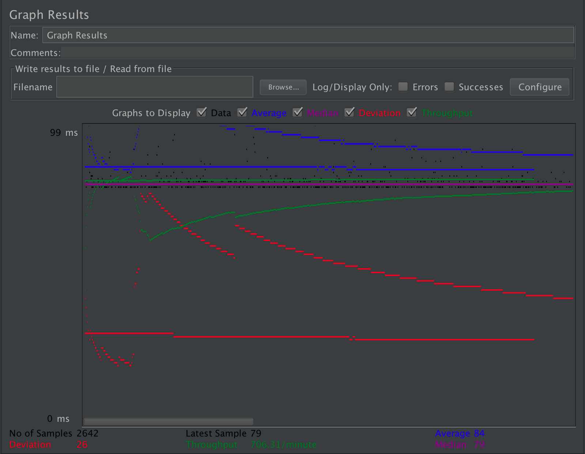
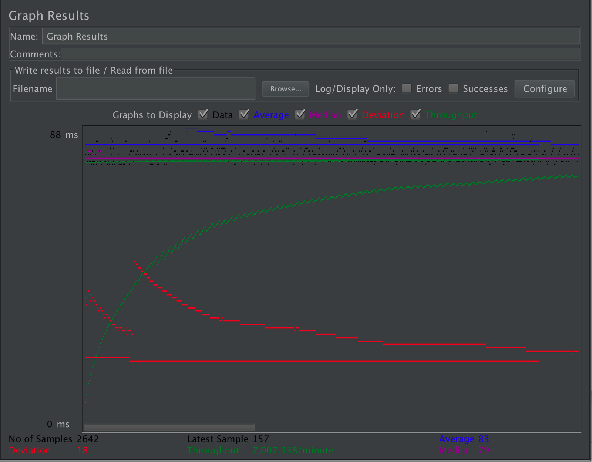
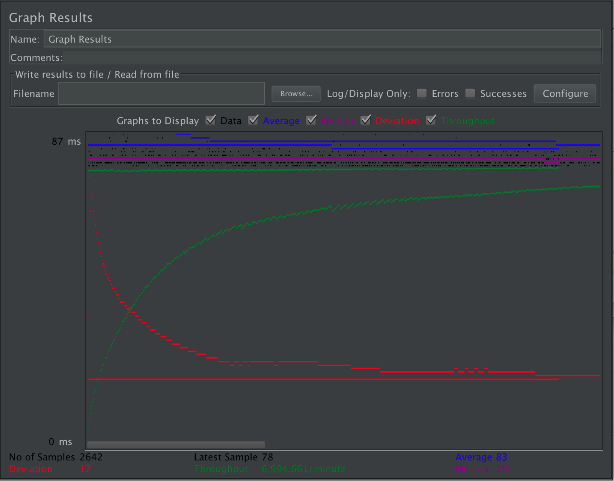

| Single-instance version cases | Graph Results Screenshot | Average Query Time(ms) | Average Search Servlet Time(ms) | Average JDBC Time(ms) | Analysis |
| Case 1: HTTP/1 thread |  | 87 | 1.2263436790310371 | 0.8663890991672974 | TS and TJ values are the smallest since both connection pooling and prepared statements are used |
| Case 2: HTTP/10 threads |  | 83 | 1.3186979560938683 | 0.9303557910673732 | The increased amount of users causes more traffic in the site and therefore, TS and TJ are expected to be larger |
| Case 3: HTTPS/10 threads |  | 98 | 1.9091597274791825 | 1.1540499621498865 | HTTPS adds overhead that is caused by lengthy SSL handshakes and that in turns increase TS and TJ values |
| Case 4: HTTP/10 threads/No prepared statements |  | 84 | 2.01892505677517 | 1.1884935654806965 | Without prepared statements it adds overheads for each query on DBMS server such as parsing, validation, and optimization |
| Case 5: HTTP/10 threads/No connection pooling |  | 83 | 2.3485995457986375 | 1.4708554125662376 | Without reusing existing connections in the pool, creating a new connection for every single request is more expensive |
| Scaled version cases | Graph Results Screenshot | Average Query Time(ms) | Average Search Servlet Time(ms) | Average JDBC Time(ms) | Analysis |
| Case 1: HTTP/1 thread |  | 84 | 1.2155766101 | 0.8020128702 | Internet connection strength varies on different machines, but scaled versions should result in equal or lesser TS and TJ values compared to single-instance versions |
| Case 2: HTTP/10 threads |  | 83 | 1.2638152914 | 0.9061317184 | Increased amount of users causes more traffic in the site, but since there is load-balancing, TS and TJ values are less than single-instance case |
| Case 3: HTTP/10 threads/No prepared statements | 83 | 1.4822104466 | 0.9458743376 | No prepared statements adds overheads for each query on DBMS, but since there is load-balancing, TS and TJ values are better than those of single-instance case | |
| Case 4: HTTP/10 threads/No connection pooling |  | 86 | 2.4651778955 | 1.5442846329 | Creating a new connection for every single request is more expensive with no connection pooling, but since there is load-balancing, TS and TJ values are better than those of single-instance case |